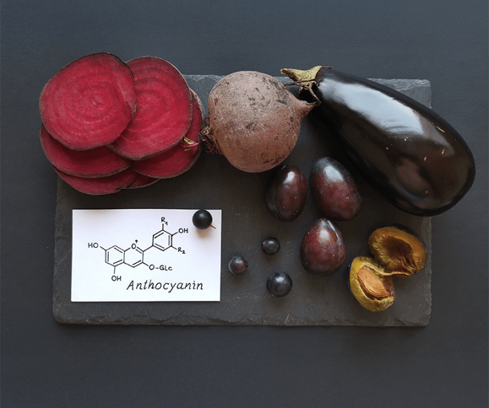
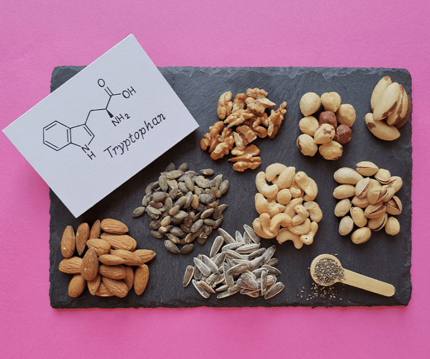

As I swirled and sniffed the red wine in my glass, I felt relieved I didn’t smell any corpses. There was a hint of blackberries—the way the whole bush of the ripe fruit smells after a summer rain, earthy and slightly tart—but mercifully no wisps of decaying flesh or urine. Unfortunately, knowing the wine contained the chemicals cadaverine, spermine, and putrescene, responsible for the rancid smell of bodily effluents and rot, somewhat spoiled the experience.
I learned about this gruesome trio of chemicals in wine from FooDB, the world’s largest database of the chemical composition of foods, launched in 2011 by David Wishart, a professor of computing and biological sciences at the University of Alberta in Canada. It’s an incredible project, designed to deliver healthy new insights into the interactions of food, the environment, and us.
Plenty is known about key compounds in food responsible for nutrition, but they represent only a tiny fraction of the molecular makeup of food—less than 10 percent, estimates Wishart. The rest is “nutritional dark matter,” a term coined by Albert-László Barabási, a professor of network science and physics at Northeastern University.
“We started digging and realized we have no clue what’s in our food.”
“The tantalizing thing about dark matter is you never know whether this obscure compound may in fact be the reason why a food is particularly healthy, or particularly bad for you, or why it produces certain effects or behaviors,” Wishart told me recently. “Our guess is that an average food item probably has 20,000 to 50,000 compounds.”
For the past two decades, Wishart and Barabási have been on a mission to identify those compounds in foods. The compounds include the natural molecules in food and those absorbed from the environment.
“Just like a magnifying glass can focus light from the sun into a pinpoint spot, food focuses its chemicals and the external environmental effects—microbes, weather, insects, man-made processing chemicals, colorants, preservatives—that go into growing, harvesting, or processing food into a single edible morsel,” Wishart said.
To date, FooDB lists more than 70,000 chemical compounds in food. For example, the FooDB entry for cherry tomatoes lists 3,977 compounds and pasta 4,049. Since its launch, FooDB has identified approximately 40,000 previously unknown compounds. “We have just scratched the surface,” Wishart said.

Photo by Danijela Maksimovic / Shutterstock
Mining the deep chemicals in food, Barabási explained, began with the drive to capture the scale of their nutritional value, “Ten years ago, we started to look at nutritional databases like the USDA’s, and we were shocked to realize they only follow 150 molecules,” he said. “But we started digging further and realized we have absolutely no clue what’s in our food.”
Barabási and Wishart argue that focusing only on a handful of nutrients, most of which are energy sources, nutrition science has ignored important regulators of health. Sugars, fats, and proteins build and power our bodies, but we are also sensitive to the finer ingredients in food. In eye-opening detail, the two scientists are revealing the complex ways those ingredients shape our metabolic function and health.
I asked Wishart for an example, and he started me off with some good news. The Mediterranean Diet, it turns out, is not hype. It has chemical support.
A chemical called 3,3-dimethylbutanol is believed to be responsible for the health benefits of consuming olive oil, grapes, and raisins, all staple ingredients of the Mediterranean Diet. This chemical prevents a group of gut bacteria from successfully digesting a group of chemicals called cholines in fats and red meat into an “atherotoxin” called trimethylamine N-oxide, or TMAO, which is elevated in the blood of patients suffering from cardiovascular disease.
“So, this obscure food metabolite has a preventative effect for heart disease by acting on certain enzymes for certain bacteria that certain people have,” Wishart said. “This might explain what’s called the French paradox, which is why people in France can eat fatty foods and have very low heart disease rates.”
Only about 5 percent of diseases seem to have a genetic component. The other 95 percent is the environment.
Wishart’s analysis is also showing that some ballyhooed food ingredients do, in fact, nothing. Flavonoids, a group of polyphenols, highly abundant in red wine, have long been hailed as defenders of good health. They are strong antioxidants, which in a test tube means they will react quickly with corrosive compounds, diffusing their potential for cellular damage. It was hypothesized that antioxidants must be counteracting the negative effects of red meat consumption. “But it turned out that the polyphenols are not bioavailable. You can eat them, but they just basically are inert, and they go right through you,” Wishart said.
Another telling example is fiber. While a diet high in fiber is generally considered healthy, it can worsen symptoms for individuals with irritable bowel syndrome, a common condition lacking a known clinical cause. An estimated 25 to 45 million people in the United States suffer from it.
Some of the early discoveries identified butyric acid as the chemical that is partly responsible for the health benefits of eating fiber, including its role in preventing cancer. Butyric acid is produced by a special group of gut bacteria that digest the fiber and must be made inside the body to confer its health benefits, Wishart explained. But the same group of bacteria can also stimulate an inflammatory immune response, if bile salts—produced by the liver in response to cholesterol—are elevated. Simply looking at “fiber”—the main structural ingredient—would in both cases have missed the point. It is the dark matter metabolites in how fiber is digested, Wishart said, that are causally linked to its health benefits and IBS.

Photo by Danijela Maksimovic / Shutterstock
Digestion itself is another step in the process of how food shapes our health and moods. “The range of things that are produced by food or a combination of food in the gut is really intriguing,” Wishart said.
He pointed to two compounds, cresyl sulfate and indoxyl sulfate, which emerge in the gut from digesting the amino acids, tyrosine and tryptophan, famously elevated in turkey, fish, meats including lamb and pork, and other proteins like soy. Normally the compounds are secreted in urine, but, Wishart explained, they can exist in the blood and form toxins.
“Those can damage the heart, the kidneys, the liver,” Wishart said. “If they get into the brain, they cause depression and anxiety. So, we’re now starting to see this association between food and mood and how these really obscure compounds can have profound effects on a person’s behavior.”
People heading into their senior years should be especially mindful of what they eat, as food toxins produced can accumulate more dangerously. “As you get into your 50s and 60s, you need to be careful,” Wishart said. “A lot of the barriers that your body has created to prevent food chemicals from acting adversely break down. The blood-brain barrier starts to break down. The gut barriers start to break down. And so, these toxins start leaking into your bloodstream or into your brain. So, it’s time to be quite careful and aware of what’s in food. We’re dealing with a more delicate system.”
The food scientists are turning up timeless insights into evolution. At some point, most of the food we consume was alive. The chemicals that make up the bodies of plants, animals, and fungi, reflect the needs and lifestyles of these species before they arrived on our plate.
Because of plants’ sedentary lifestyle, Barabási said, they lean on the language of chemicals for communication and defense. Some polyphenols are signaling molecules, a list of instructions that regulate the plant’s growth hormones, while others are potent insect poisons. The chemical vocabulary of plants is advanced, precise, and highly evolved, reflecting millennia of co-evolution between them and the various herbivores that consume them. Given that with every bite of a vegetable, we are ingesting the entire dictionary of chemicals the plant evolved, it is perhaps unsurprising that most of these slip right through—they were not intended for us.

Photo by Danijela Maksimovic / Shutterstock
Or not entirely intended for us. By looking more closely into the chemical composition of food, the scientists have found that our bodies have evolved to recognize some of the more obscure plant chemicals and their derivatives.
For example, Wishart said, our cells contain an “aryl hydrocarbon receptor,” which largely manages our bodies’ immune response to toxins. The receptor is found in every tissue and organ in our bodies and can kick off a range of inflammatory cascades. But in the intestine, it also responds to indole-3-carbinol, a plant derivative produced during the digestion of collard greens and kale. When indole-3-carbinol binds the receptor here, a protective mechanism is kicked in, which strengthens the gut’s physical barrier. Over the long term, this decreases the risk of developing colon cancer.
Not all food scientists are tantalized by the hunt for nutritional dark matter. One is Kevin Hall, formerly of the National Institutes of Health, who left the agency citing censorship over his research into the risks of ultra-processed foods. Hall is the author, with health journalist Julia Belluz, of the 2025 book, Food Intelligence: The Science of How Food Both Nourishes and Harms Us. They feature Wishart in the book and gently chide him for his hyperfocus on food chemistry. “If you’re a wine lover, you might not want to have a glass with David Wishart. He sees the ancient beverage, all food really, differently from most people, in what is sometimes an uncomfortable level of detail.” The authors portray the search for nutritional dark matter as ultimately reductive. “Taking food apart and analyzing its chemicals takes them out of context, not only from their original structures, but from their social, environmental, and health context,” they write.
It’s a fair criticism in a book that puts its spotlight on the social systems that incentivize cheap, calorie-dense, ultra-processed foods that overwhelm human biology and make it extremely difficult to choose healthy diets.
But in fact, Wishart and Barabási are sketching a big picture of the environment. While they are exposing the chemical depths in food, and their role in metabolic function (for better and worse), they are refining the portrait of the chemicals that food acquires from the environment, including pesticides, microplastics, and preserves. By the summer of 2026, Wishart expects to have a detailed portrait of 1,000 chemicals that form a connection between food and the environment.
How, exactly, the seemingly bottomless trove of chemicals in food affects our health remains an investigation for the ages. As they amass data, Wishart said, the search seems ever more imperative. Both he and Barabási compared the hunt for nutritional dark matter to the Human Genome Project. The more scientists learned about genes and their functions, the more they realized that genes weren’t the main cause of diseases. “Only about 5 percent of diseases seem to have a genetic component. The other 95 percent is the environment,” Wishart said.
Ultimately, the food scientists said, bringing the chemical makeup of what’s on our plates into the light will provide a wide new lens on the environment’s impact on our health. It’s never good to be left in the dark. 
Lead image: Danijela Maksimovic / Shutterstock